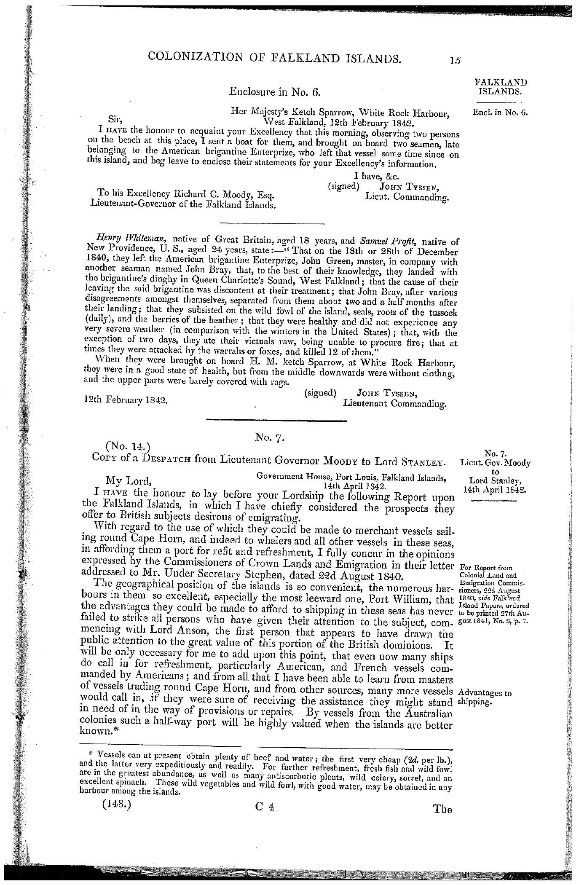
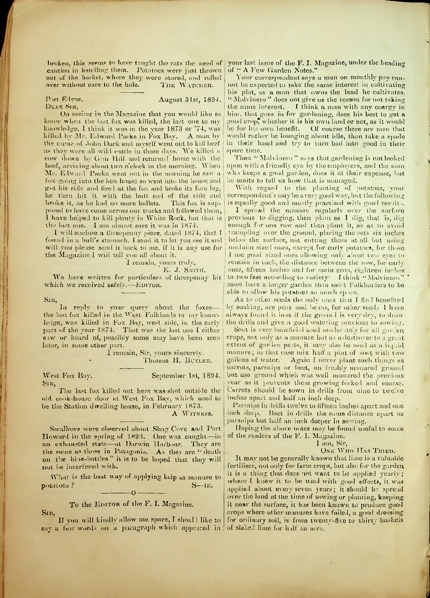
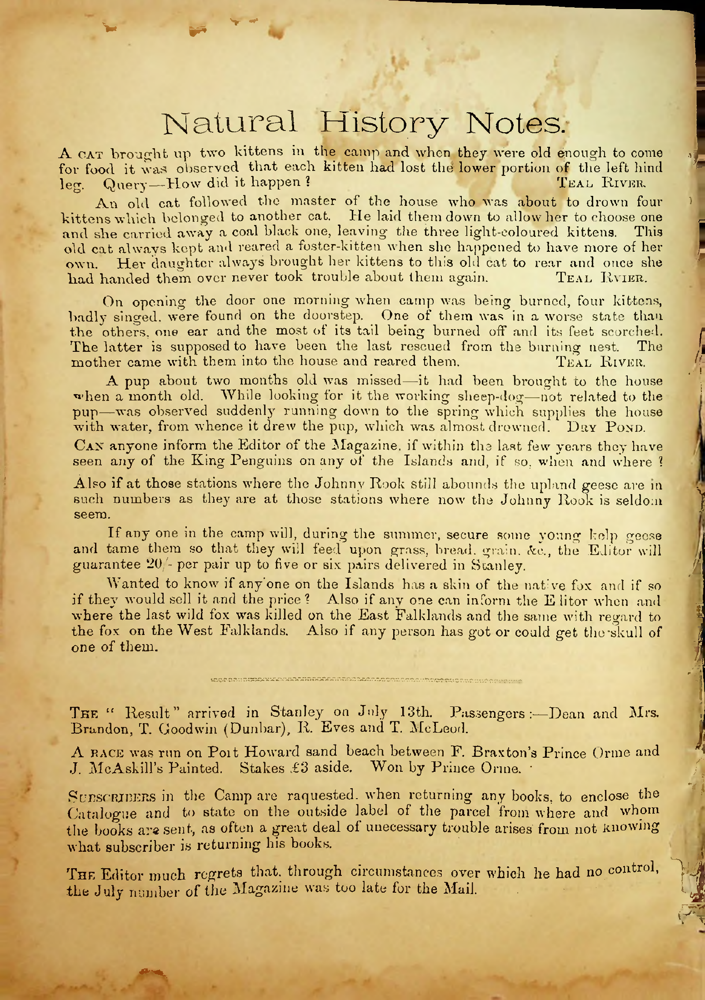

1. Two castaways reported killing twelve warrahs, 1840–42
Henry Whiteman and Samuel Profit told John Tyssen that they had been ashore on West Falkland since 18 or 28 December 1840. Tyssen recorded their statement after rescuing them at White Rock Harbour on 12 February 1842.
“at times they were attacked by the warrahs or foxes, and killed 12 of them.”
This is the sailors’ testimony, recorded by the rescuing officer. The count and the reported attacks were not independently confirmed.
John Tyssen, enclosure in No. 6, Copies or Extracts of any Correspondence relative to the Falkland Islands, House of Commons paper 148 (22 June 1843), p. 15. Edition, PDF p. 20
Read the original page

House of Commons paper 148 (1843), p. 15; scan from the Falklands Timeline copy.Already reproduced in Penguin News (1993) and the Jane Cameron National Archives newsletter (2020).
2. Three letters disagree about the last local killing at Fox Bay
In October 1894 the Falkland Islands Magazine printed these recollections:
| Correspondent | Recalled date | Place |
|---|
| E. J. Smith | 1873 or 1874; writer inclines to 1874 | Fox Bay |
|---|
| Thomas H. Butler | early 1874 | Fox Bay, west side, West Falkland |
|---|
| A Witness | February 1873 | Old cook-house door, West Fox Bay; formerly the station dwelling house |
|---|
Smith names Edward Packe and describes a fox entering a hen house after Smith and John Dack had returned with beef. Butler explicitly allows later sightings elsewhere. These are local memories, written about twenty years later, and may concern the same event. They do not establish a replacement for the usual 1876 extinction date.
The Falkland Islands Magazine, vol. VI, no. 66 (October 1894), letters page. Recovered edition, PDF p. 192
Read the three original letters

Falkland Islands Magazine, October 1894; Jane Cameron National Archives scan, recovered through the Internet Archive’s 25 May 2025 snapshot.See the inquiry that prompted the letters
The July 1894 editor sought a fox skin for purchase and a skull, and asked separately about the last killings on East and West Falkland. The inquiry does not confirm that specimens were available or obtained.

Falkland Islands Magazine, no. 63 (July 1894), PDF p. 160.Smith’s letter was already discussed in Blanco et al., Historias de la fauna perdida, p. 42. The scan corrects web OCR: E. J. Smith; “helped,” not “hoped.” The date 1 September 1894 belongs to “A Witness,” not Butler.